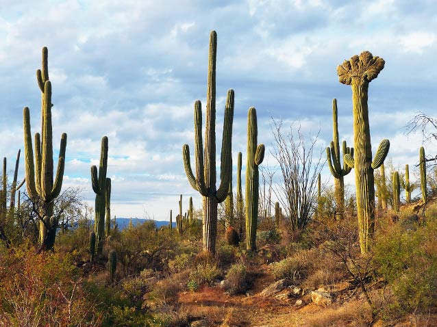
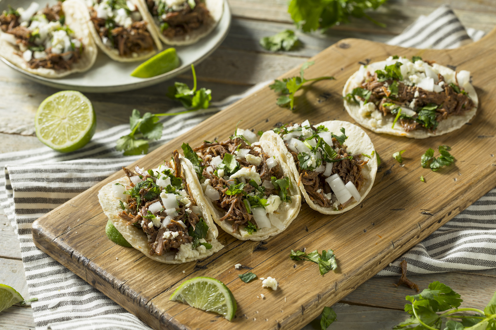
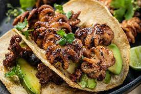

Welcome to Hermosillo!
Hermosillo is the capital of the state of Sonora, Mexico. It's known for its rich history, vibrant culture, harsh weather, and beautiful landscapes. Hermosillo is only 4 hours away from the American border and has a unique gastronomy which consists mostly of tacos, all kinds of them. From Octopus to steak tacos there's something from everybody. People from all ove rthe world come to Hermosillo to taste the internationally praised eye, tongue, and brain tacos as well as the famous carne asada.
Explore the city's fascinating history on the History page, and discover its many attractions and landmarks on the Visit page.
Plan your trip to Hermosillo today and experience what this city has to offer!
See Hermosillo on the Map
Photos of Local Gastronomy

